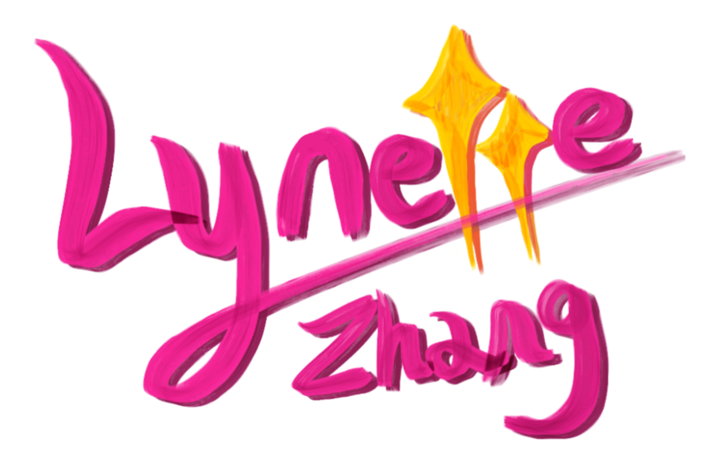
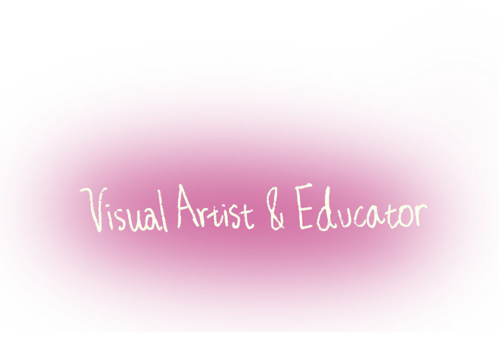
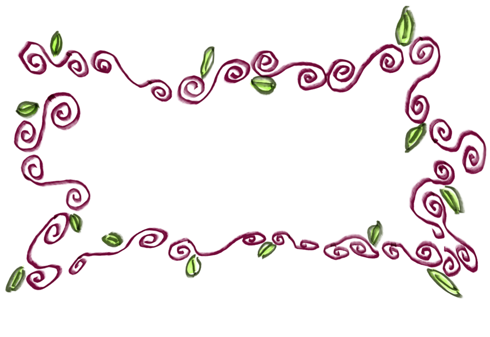

Lynette Zhang is a visual artist and educator based in Ontario, Canada. She works across sculpture, painting, and mixed media, with a practice rooted in observation, visual documentation, and material exploration.
She holds a Bachelor of Fine Arts (Hons) from Queen’s University and is currently completing Concurrent Education. Her work moves between studio-based making and educational contexts, where processes of learning, research, and making inform one another.
Driven by curiosity, Lynette draws inspiration from everyday encounters, animal companionship, photography, travel, and collected objects. She is particularly interested in the overlooked, the unexpected, and the visually intriguing details that shape daily experience. Through attentive observation and experimentation, her practice explores how these moments can be translated through form, surface, and material transformation.
Selected Exhibitions
Pillowtalk (Solo Exhibition), Union Gallery, Queen’s University, Kingston, ON, 2025
Obsolescence (Graduating Exhibition), Ontario Hall, Queen’s University, Kingston, ON, 2025
Mice on Venus (Group Exhibition), Union Gallery, Queen’s University, Kingston, ON, 2023
